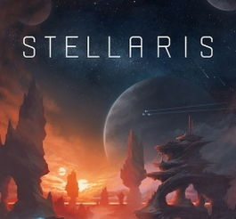
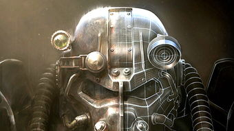

《战地1》
游戏设定在第一次世界大战中，游戏中包含了很多系列元素，比如骑兵、火焰喷射器、双翼飞机和齐柏林飞艇。
《群星》
《群星》包含了大量外星种族，玩家在游戏中可以对各个星系进行探索，并遇到多种多样的外星生物和随机产生的敌人。
《辐射4》
核战争后的美国波士顿，玩家将以主角的小狗为核心，探索这片广阔的末世世界。
虚拟与现实的交织
游戏设定在第一次世界大战中，游戏中包含了很多系列元素，比如骑兵、火焰喷射器、双翼飞机和齐柏林飞艇。
《群星》包含了大量外星种族，玩家在游戏中可以对各个星系进行探索，并遇到多种多样的外星生物和随机产生的敌人。
核战争后的美国波士顿，玩家将以主角的小狗为核心，探索这片广阔的末世世界。